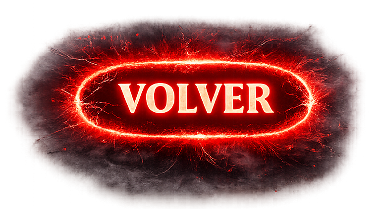

Bitácora
Documentación del proceso de desarrollo del proyecto.
Día 1 - Inicio del proyecto
Se creó la estructura base del portafolio con HTML, CSS y JS. Se configuró el loader con imágenes de Stranger Things.
Día 2 - Diseño del Home
Se agregó el diseño de las cards de integrantes con marco blanco y efectos de elevación en los botones.
Día 3 - Modo Oscuro
Se implementó la funcionalidad del modo oscuro con el fondo upside-down.png y cambio de imágenes de integrantes.
Día 4 - Páginas individuales
Cada integrante del equipo realizó su página personal.